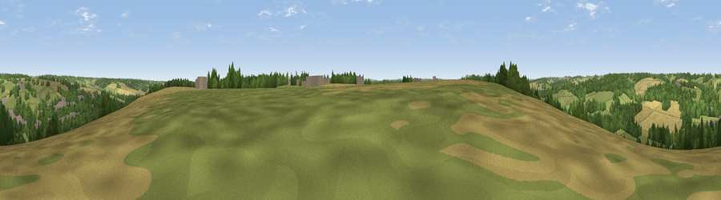

Viewpoint near Ramsbury
#37080 in England · top 78% of its area beats it · near RamsburyWhere it is
The exact computed spot (SU 26975 70725). Click the marker for map links.
The view, rendered

A 360° render of this exact spot computed from the terrain model, tree cover and land cover — summer colours, afternoon light, calibrated against photographs of famous viewpoints. Real trees, hedges and buildings will differ in detail.
The panorama
Grey silhouette: terrain skyline in each direction (720 bearings, Earth curvature and refraction included). Dashed green: skyline with trees (+15 m) and buildings (+8 m) as obstacles. Blue strip: how far the ground is visible on each bearing.
Where the view opens
Wedge length = distance to the farthest visible ground on that bearing (vegetation-aware). Rings at 10, 25 and 50 km.
What fills the view
37% grassland · 30% woodland · 28% cropland · 5% built-up
Angular shares of the visible panorama (visual magnitude), not map area. Landscape diversity 0.53 (0–1 Shannon).
Key numbers
More beautiful places nearby
The staircase of upgrades: each row has a higher view potential than everything closer. Driving times are estimates from straight-line distance, calibrated against real road routing — check an actual route before setting out.
| Place | Direction | Drive | Score |
|---|---|---|---|
| Viewpoint near Ramsbury | WSW · 2 km | ~6 min | 39.7 |
| Viewpoint near Mildenhall | WNW · 4 km | ~9 min | 40.6 |
| Viewpoint near Mildenhall | WNW · 4 km | ~10 min | 41.6 |
| Viewpoint near Ogbourne St George | WNW · 7 km | ~14 min | 45.9 |
| Viewpoint near Burbage | SSW · 8 km | ~16 min | 46.6 |
| Peaks Downs | N · 8 km | ~16 min | 48.4 |
| Viewpoint near Ogbourne St George | NW · 9 km | ~17 min | 63.4 |
| Viewpoint near Ogbourne St George | WNW · 9 km | ~18 min | 64.9 |
51.43489, -1.61334 · source: screening · position refined by local search. Computed location — check access rights before visiting.